7.1.1. Orden de Devolución (Cliente)¶
Ubique y seleccione en el menú de ADempiere, la carpeta “Gestión de Ventas”, luego seleccione la carpeta “Órdendes de Venta”. Por último, seleccione la ventana “Orden de Devolución (Cliente)”.
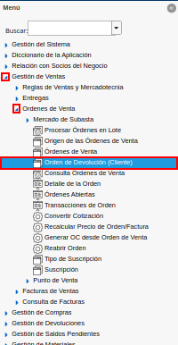
Imagen 1. Menú de ADempiere
Podrá visualizar la ventana “Orden de Devolución (Cliente)”, con los campos necesarios para crear la orden de devolución del cliente.
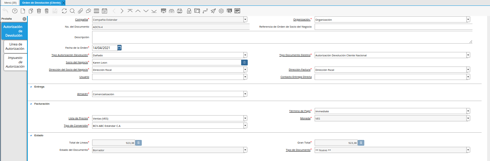
Imagen 2. Ventana orden de devolución cliente
Seleccione el icono “Registro Nuevo”, ubicado en la barra de herramientas de ADempiere.
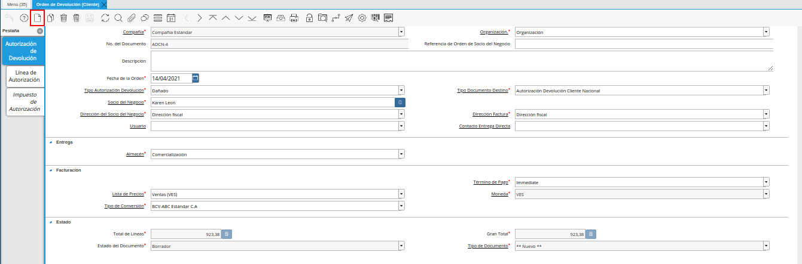
Imagen 3. Icono Registro Nuevo
Seleccione en el campo “Organización”, la organización para la cual requiere realizar el registro.
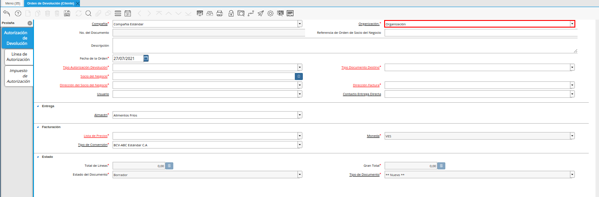
Imagen 4. Campo Organización
Al guardar el registro de la pestaña “Autorización Devolución Cliente”, ADempiere asignará de manera automática en el campo “No. del Documento”, el correlativo establecido en el tipo de documento que sea seleccionado en el registro.
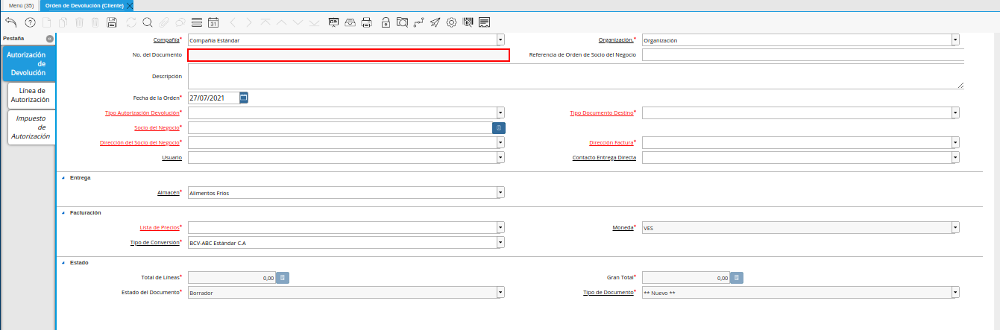
Imagen 5. Campo No. del Documento
Introduzca en el campo “Descripción”, una breve descripción referente al registro que se encuentra realizando.
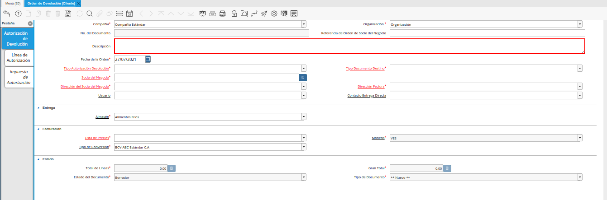
Imagen 6. Campo Descripción
Seleccione en el campo “Fecha de la Orden”, la fecha en la que se realiza la transacción.
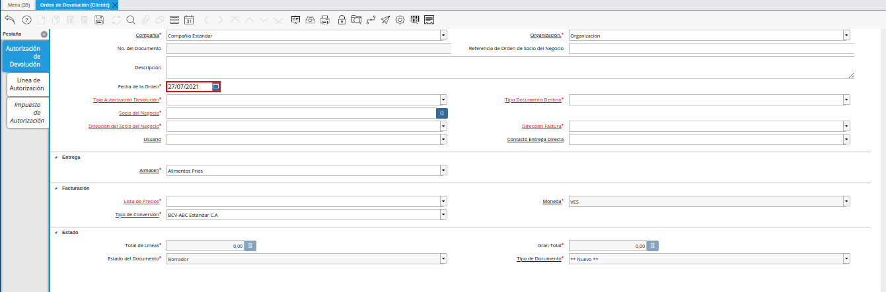
Imagen 7. Campo Fecha de la Orden
Seleccione en el campo “Tipo Autorización Devolución”, el tipo de autorización de devolución que se encuentra realizando.
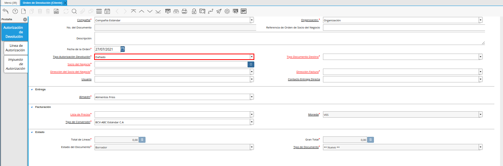
Imagen 8. Campo Tipo Autorización Devolución
Seleccione en el campo “Tipo de Documento”, el tipo de documento que requiere generar. La selección de este campo define el comportamiento del documento, según la configuración que tenga dicho tipo de documento.
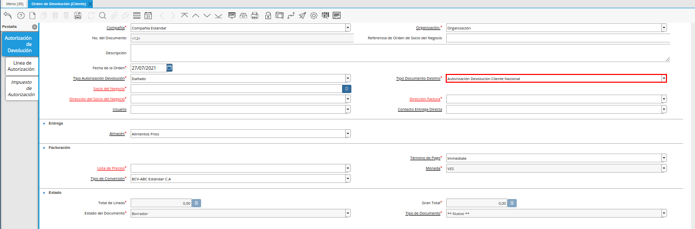
Imagen 9. Campo Tipo de Documento
Seleccione en el campo “Socio del Negocio”, el socio del negocio cliente que realiza la devolución.
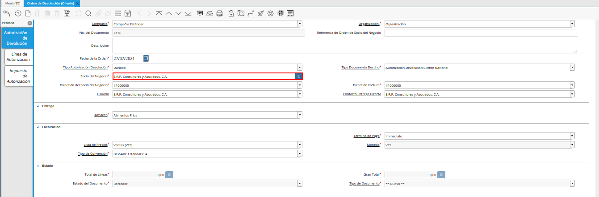
Imagen 10. Campo Socio del Negocio
Podrá visualizar en el campo “Dirección del Socio del Negocio”, la dirección de localización del socio del negocio seleccionado.
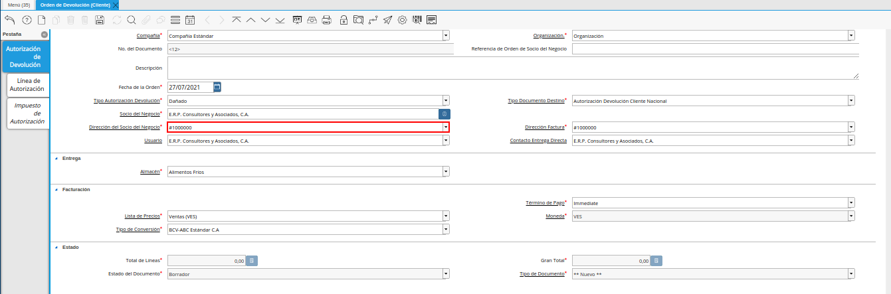
Imagen 11. Campo Dirección del Socio del Negocio
Podrá visualizar en el campo “Dirección Factura”, la dirección de fecturación del socio del negocio seleccionado.
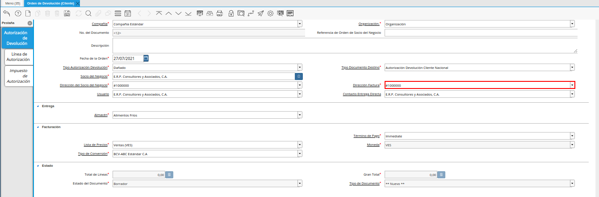
Imagen 12. Campo Dirección Factura
Podrá visualizar en el campo “Usuario”, el usuario de contacto del socio del negocio seleccionado.
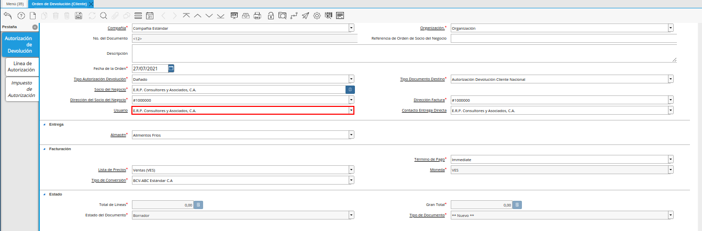
Imagen 13. Campo Usuario
Podrá visualizar en el campo “Contacto Entrega Directa”, el usuario de contacto para la entrega directa del socio del negocio seleccionado.
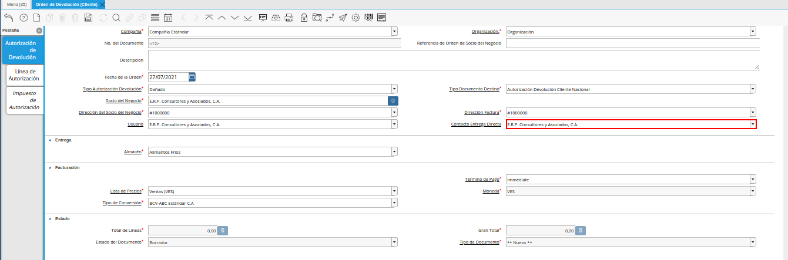
Imagen 14. Campo Contacto Entrega Directa
Seleccione en el campo “Almacén”, el almacén al que se ingresa el producto devuelto.
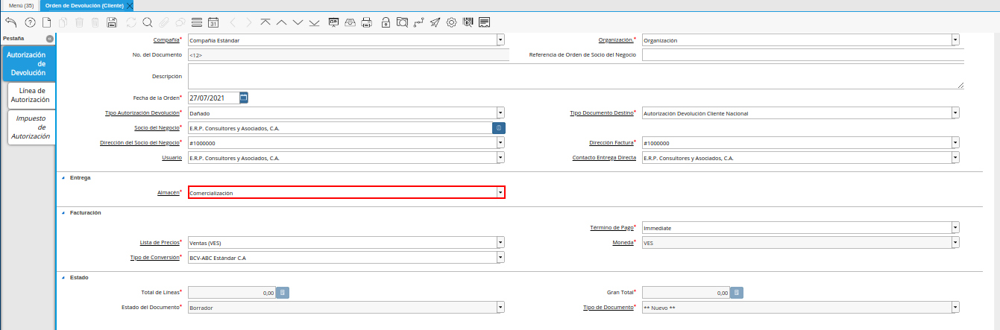
Imagen 15. Campo Almacén
Seleccione en el campo “Lista de Precios”, la lista de precios con la cual fue vendido el producto.
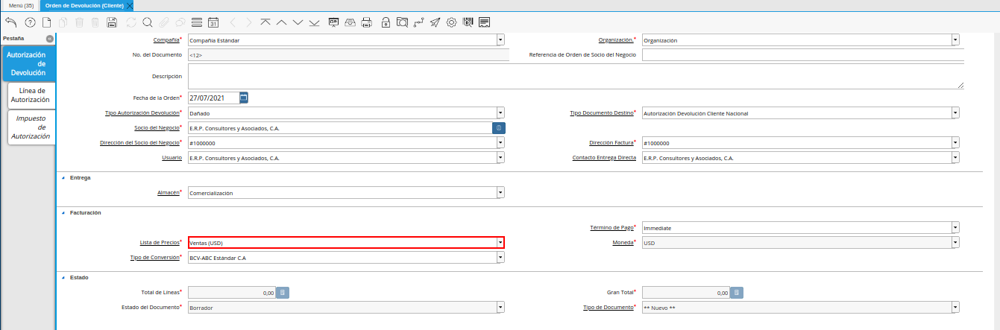
Imagen 16. Campo Lista de Precios
Seleccione en el campo “Término de Pago”, el término de pago utilizado para la venta.
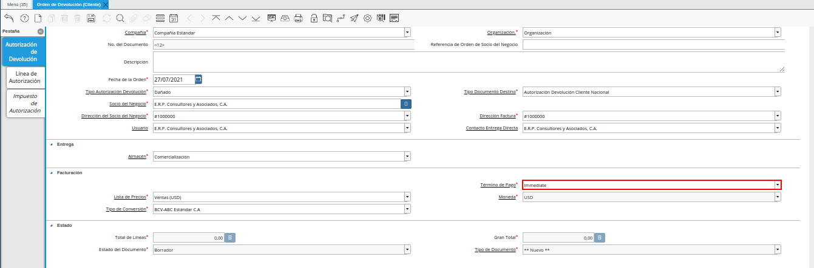
Imagen 17. Campo Término de Pago
Seleccione en el campo “Tipo de Conversión”, el tipo de conversión con el cual fue vendido el producto.
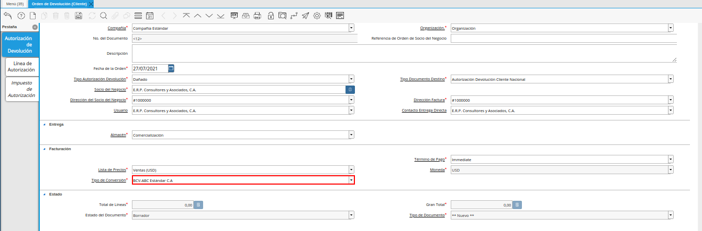
Imagen 18. Campo Tipo de Conversión
Podrá visualizar en el campo “Moneda”, la moneda definida para la lista de precios seleccionada.
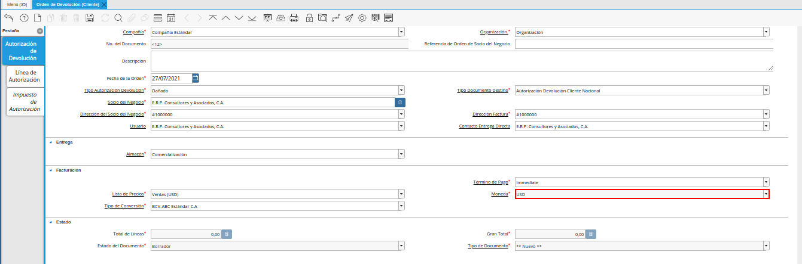
Imagen 19. Campo Moneda
Seleccione el icono “Guardar Cambios”, ubicado en la barra de herramientas de ADempiere.
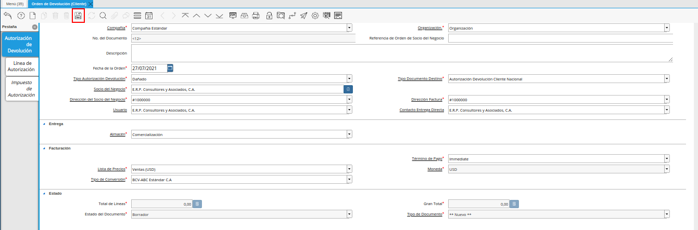
Imagen 20. Icono Guardar Cambios
Luego de guardar el registro de la pestaña principal, seleccione la opción “Crear Orden de Devolución desde Entrega/Recibo” ubicada en el menú desplegado por la selección del icono “Proceso”, dicho icono se encuentra ubicado en la barra de herramientas de ADempiere.
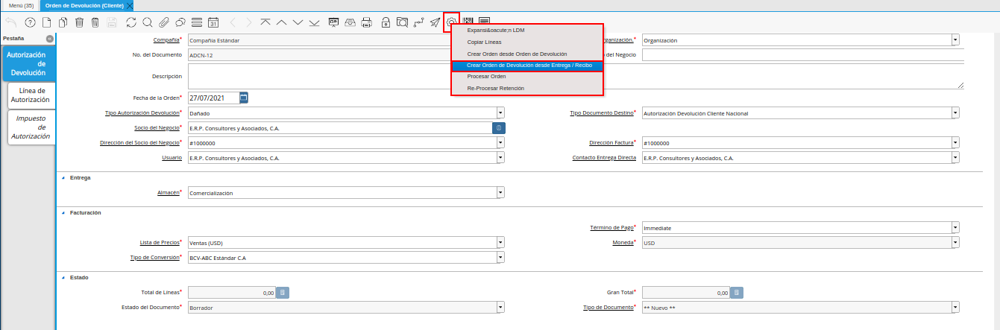
Imagen 21. Opción Crear Orden de Devolución desde Entrega/Recibo
Podrá visualizar la ventana del proceso seleccionado, en la cual se seleccionan las líneas de la entrega que requiere devolver el cliente.
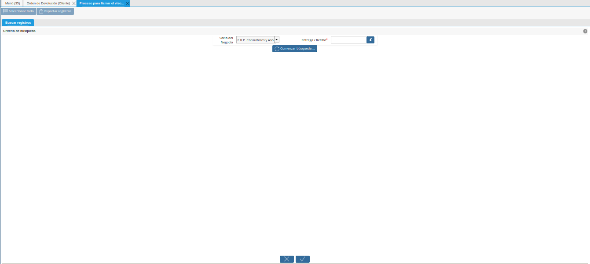
Imagen 22. Ventana del Proceso
Seleccione en el campo “Entrega/Recibo”, la entrega desde la cual requiere realizar la devolución.
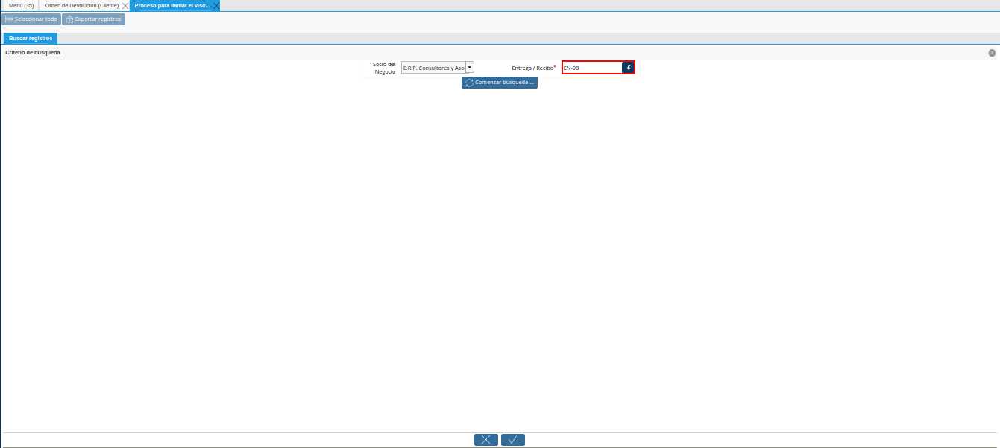
Imagen 23. Campo Entrega/Recibo
Seleccione la opción “Comenzar Búsqueda”, para filtar la búsqueda por la entrega seleccionada.
Imagen 24. Opción Comenzar Búsqueda
Seleccione la línea de la entrega por la cual requiere generar la devolución.
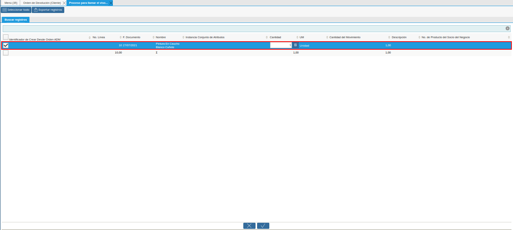
Imagen 25. Selecciíon de Líneas del Proceso
Seleccione la opción “OK”, para cargar a la pestaña “Línea de Autorización”, la información de las líneas seleccionadas en el proceso.
Imagen 26. Opción OK del Proceso

Seleccione el icono “Refrescar”, para actualizar el registro de la ventana y poder visualizar la información cargada desde el proceso.
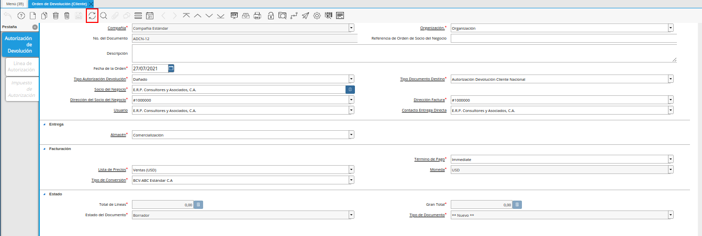
Imagen 27. Icono Refrescar
Seleccione la pestaña “Línea de Autorización” para verificar la información cargada desde el proceso.
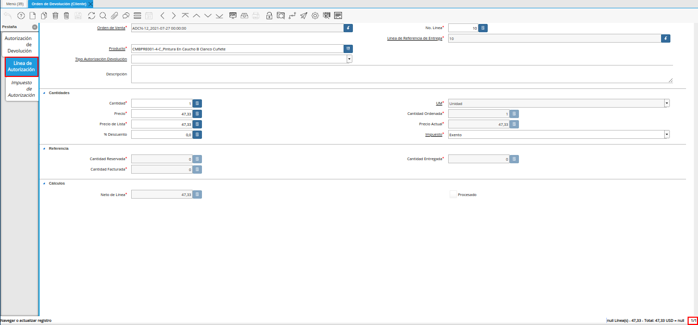
Imagen 28. Pestaña línea de autorización
Seleccione la pestaña principal “Autorización Devolución Cliente”, para completar el registro de autorización.
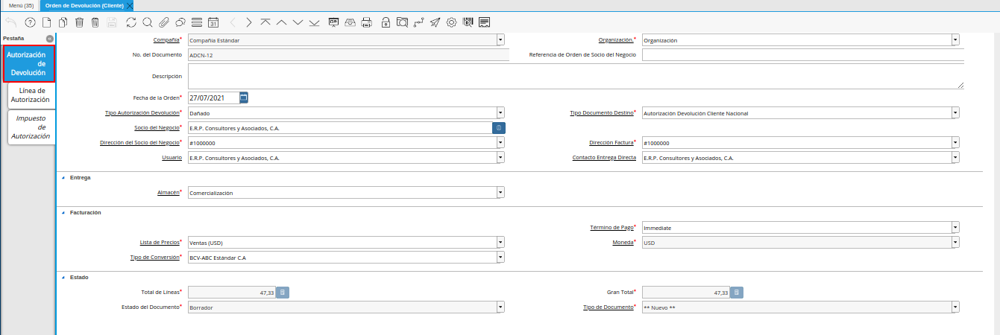
Imagen 29. Pestaña Autorización Devolución Cliente
Podrá visualizar en el campo “Total de Líneas”, el total de las líneas correspondiente a la transacción que se encuentra realizando.
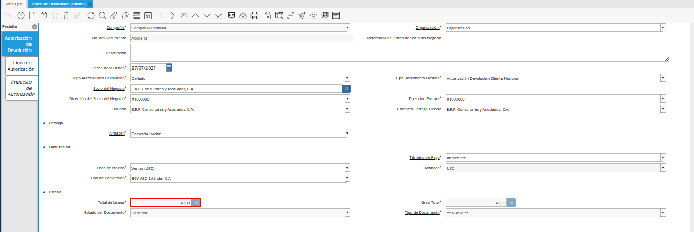
Imagen 30. Campo Total de Líneas
Podrá visualizar en el campo “Gran Total”, el gran total correspondiente a la transacción que se encuentra realizando.
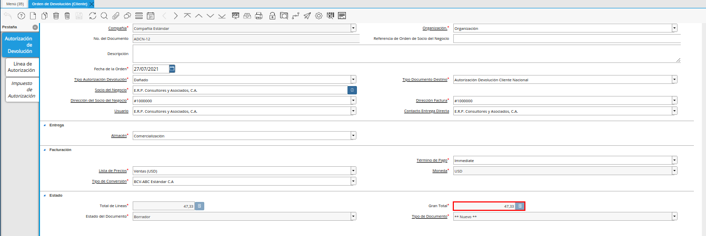
Imagen 31. Campo Gran Total
Seleccione la opción “Procesar Orden”, ubicada en el menú que se desplega al seleccionar el icono “Proceso”, dicho icono se encuentra ubicado en la barra de herramientas de ADempiere.
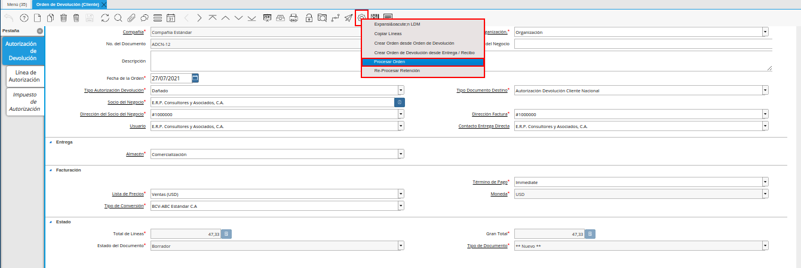
Imagen 32. Opción Procesar Orden del Icono Proceso
Por último, seleccione la acción “Completar” y la opción “OK”, para completar el registro.
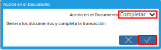
Imagen 33. Acción Completar y Opción OK
7.1.2. Devolución Cliente¶
Para generar el documento de devolución de cliente, se procede a realizar el procedimiento indicado en el material Generar Entrega desde Líneas de la Orden, considerando lo siguiente:
Filtrar por el socio del negocio cliente involucrado en la devolución, que para este ejemplo sería “E.R.P. Consultores y Asociados, C.A.” y seleccionar la opción “Comenzar Búsqueda”.
Seleccionar el registro de la orden de devolución desde la cual requiere generar la devolución, que para este ejemplo sería “ADCN-12”.
Ingresar la fecha con la cual será generado el documento de devolución, que para este ejemplo sería “27/07/2021”.
Indicar la acción del documento con la cual será generado el mismo, que para este ejemplo sería “Completar”.
La selección del tipo de documento en el campo “Tipo de Documento”, define el comportamiento del documento a generar. Para este caso no es necesario seleccionar algún tipo de documento ya que el tipo de documento “Autorización Devolución Cliente Nacional”, con el cual fue generado el documento “Orden de Devolución Cliente”, se encuentra configurado para que genere de manera automática como tipo de documento para la entrega, el documento “Devolución de Cliente Nacional”.
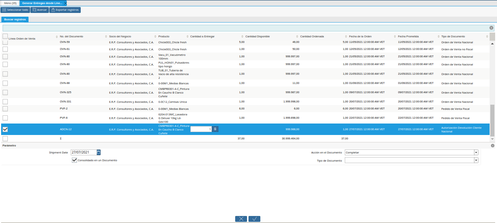
Imagen 34. Proceso Generar Entregas desde Líneas de la Orden
Luego de ejecutar el proceso con los parámetros indicados anteriormente, podrá ubicar el resultado en la ventana “Devolución Cliente”, seleccionando el icono “Buscar”, que se encuentra en la barra de herramientas de ADempiere. Una vez sea visualizada la ventana de búsqueda, se debe seleccionar la pestaña “Avanzado” y utilizar el campo “Orden de Venta” para filtrar por la orden de devolución realizada previamente. Para este caso, la orden de devolución para filtar es la “ADCN-12”.
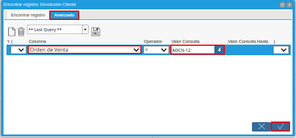
Imagen 35. Búsqueda Avanzada
Al ejecutar la búsqueda podrá visualizar el documento de devolución “DCN-46” de la siguiente manera.
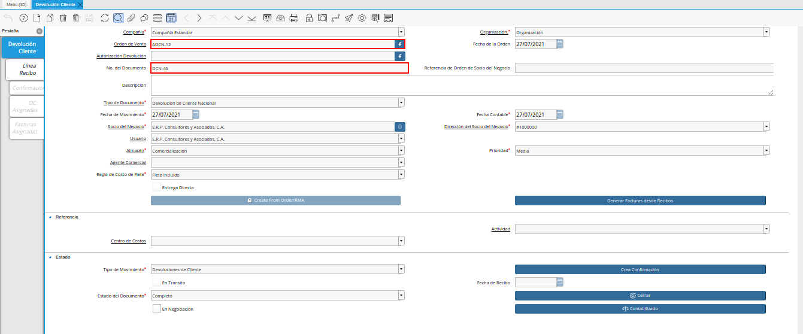
Imagen 36. Documento de Devolución Cliente
7.1.3. Nota de Crédito¶
Para generar el documento de nota de crédito, se procede a realizar el procedimiento indicado en el material Generar Factura desde Líneas de la Orden, considerando lo siguiente:
Filtrar por el socio del negocio cliente involucrado en la devolución, que para este ejemplo sería “E.R.P. Consultores y Asociados, C.A.” y seleccionar la opción “Comenzar Búsqueda”.
Seleccionar el registro de la orden de devolución desde la cual requiere generar la nota de crédito, que para este ejemplo sería “ADCN-12”.
Ingresar la fecha con la cual será generado la nota de crédito, que para este ejemplo sería “27/07/2021”.
Indicar la acción del documento con la cual será generado el mismo, que para este ejemplo sería “Completar”.
La selección del tipo de documento en el campo “Tipo de Documento”, define el comportamiento del documento a generar. Para este caso no es necesario seleccionar algún tipo de documento ya que el tipo de documento “Autorización Devolución Cliente Nacional”, con el cual fue generado el documento “Orden de Devolución Cliente”, se encuentra configurado para que genere de manera automática como tipo de documento para la factura, el documento “Nota de Crédito de Cuentas por Cobrar Nacional”.
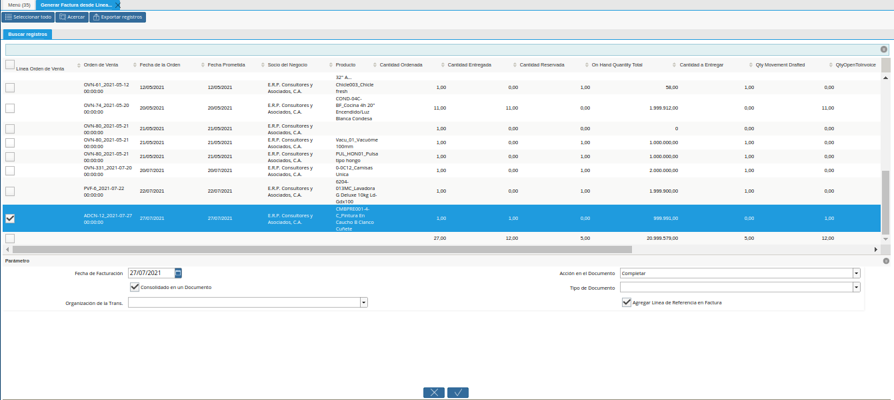
Imagen 37. Proceso Generar Facturas desde Líneas de la Orden
Luego de ejecutar el proceso con los parámetros indicados anteriormente, podrá ubicar el resultado en la ventana “Documentos por Cobrar”, seleccionando el icono “Buscar”, que se encuentra en la barra de herramientas de ADempiere. Una vez sea visualizada la ventana de búsqueda, se debe seleccionar la pestaña “Avanzado” y utilizar el campo “Orden de Venta” para filtrar por la orden de devolución realizada previamente. Para este caso, la orden de devolución para filtar es la “ADCN-12”.
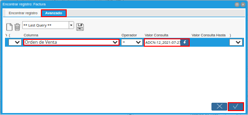
Imagen 38. Búsqueda Avanzada
Al ejecutar la búsqueda podrá visualizar el documento de nota de crédito “NCN-24” de la siguiente manera.
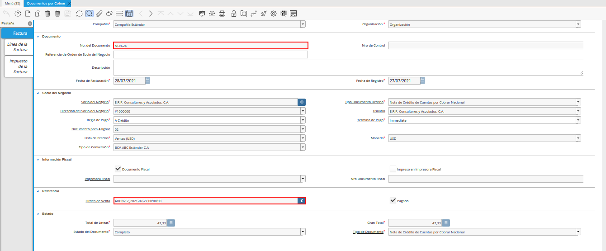
Imagen 39. Documento de Nota de Crédito